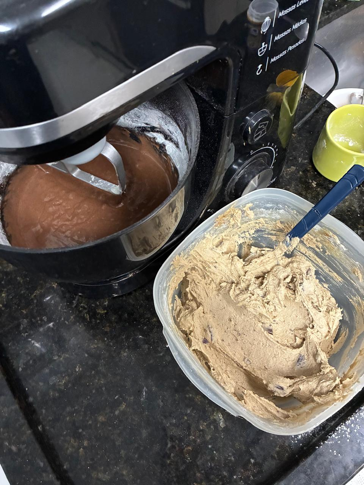
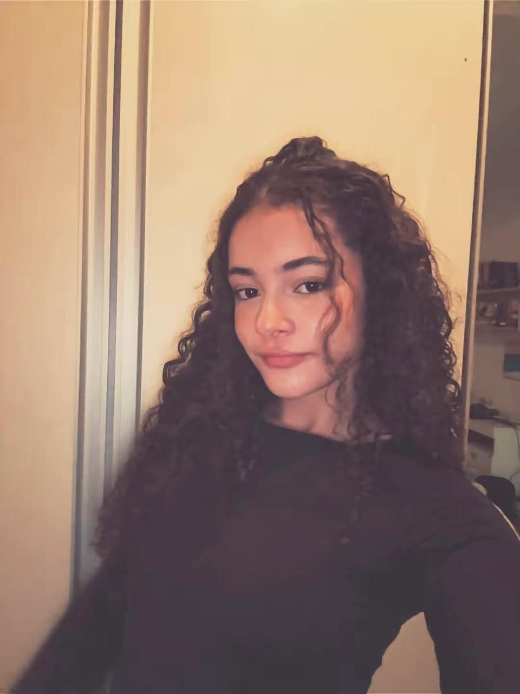
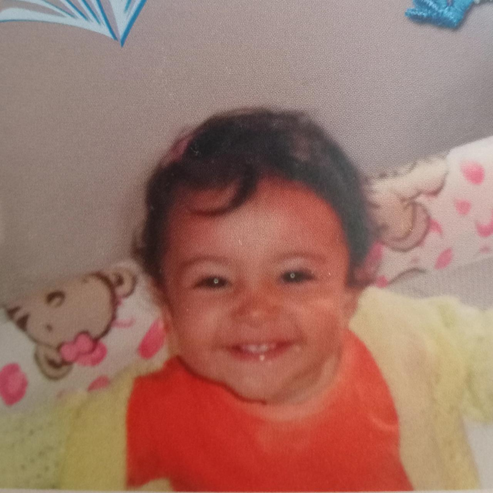
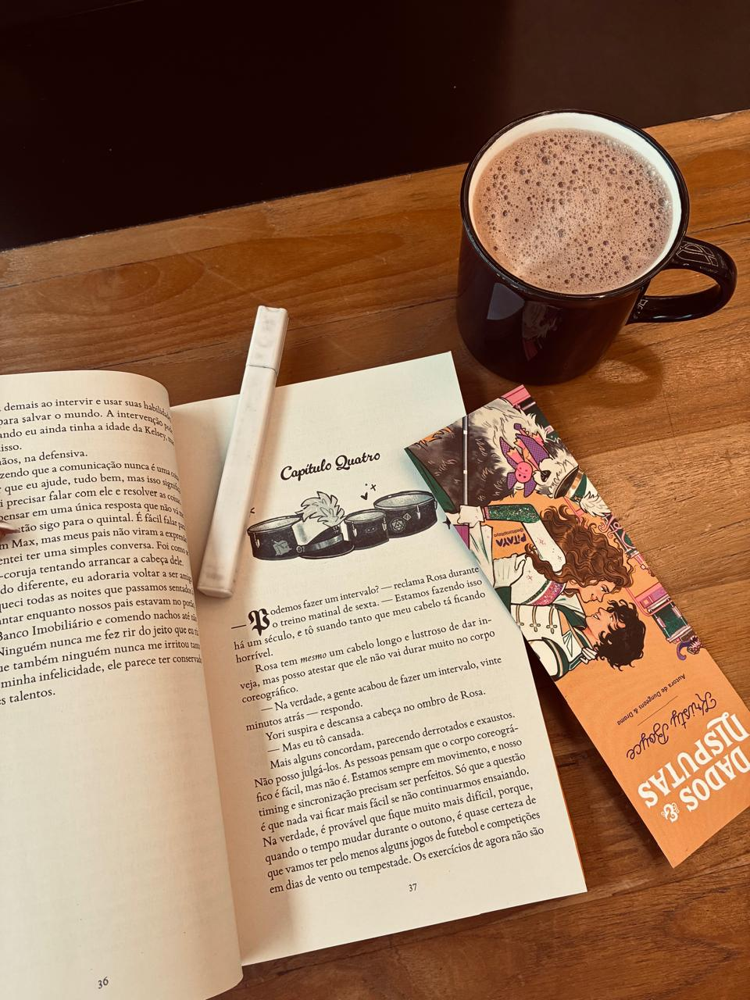
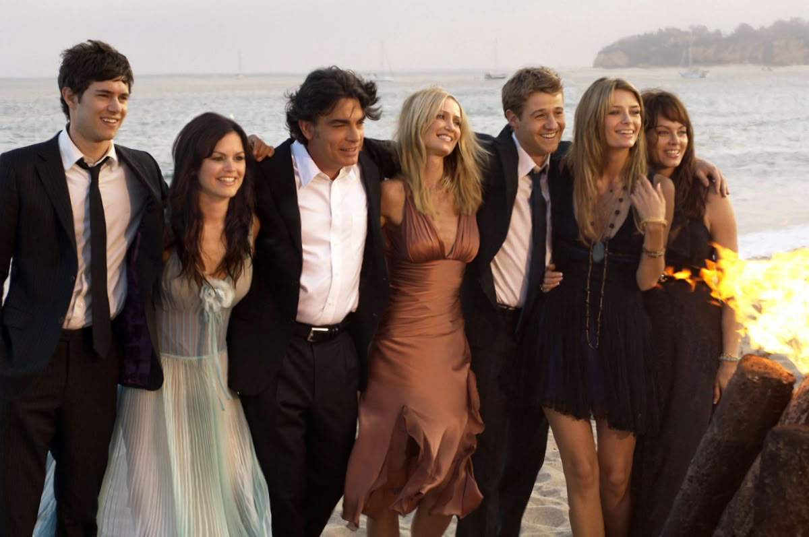
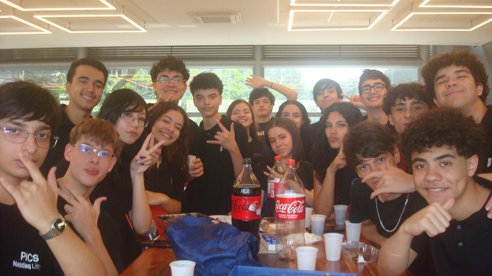
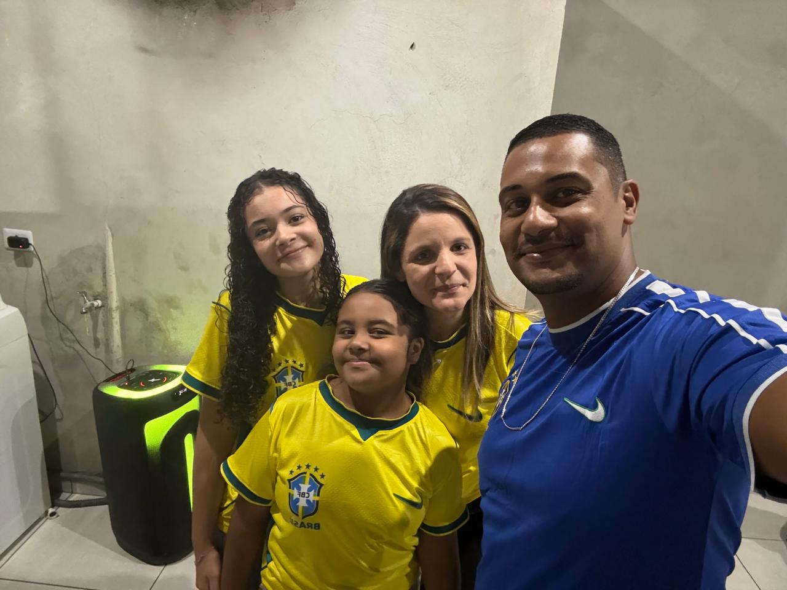
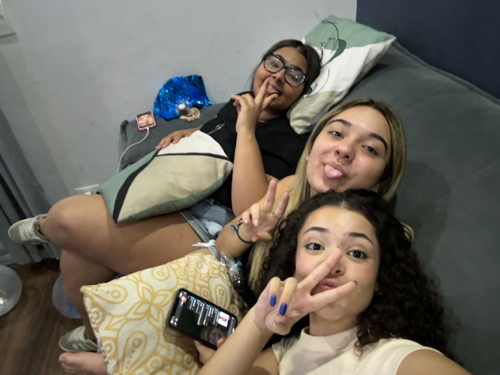
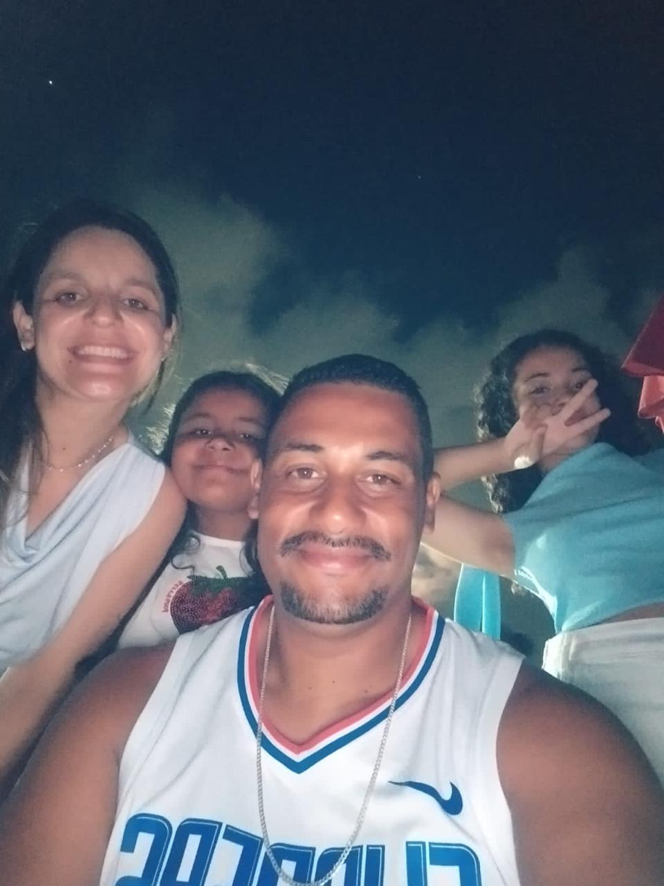

01 / COZINHA
Gosto de cozinhar
Gosto de testar receitas e preparar coisas diferentes. Isso é um dos meus atos de carinho, adoro cozinhar para as outras pessoas.
UM POUCO SOBRE MIM
Tenho 15 anos, sou do 1º D e fiz esta página para o trabalho de Desenvolvimento de Sistemas.
Conheça um pouco mais
QUEM EU SOU

Oi! sou a Ana Luísa, tenho 15 anos e estudo no Instituto J&F. Sou uma pessoa que gosta de aprender coisas novas, conhecer assuntos diferentes e aproveitar os momentos com as pessoas importantes para mim.
Gosto bastante de tecnologia e tenho me interessado cada vez mais pela área.
COISAS QUE FAZEM PARTE DE MIM
Algumas coisas de que gosto.

Gosto de testar receitas e preparar coisas diferentes. Isso é um dos meus atos de carinho, adoro cozinhar para as outras pessoas.

Ler é meu hobbie favorito, desde os meus 6 anos. Leio muito e de tudo um pouco. O meu livro favorito é Malibu Renasce da Taylor Jenkind Reid.

Além de gastar meu tempo lendo eu amo ver séries. A minha favorita de todas é The O.C, mas eu tenho assistido muito Friends e gostado bastante.
PESSOAS ESPECIAIS
Uma coisa que me faz muito feliz mesmo são os meus amigos e familia. Esse ano conheci muitas pessoas especiais, que tornaram essa no maravilhoso. E junto a ela tem a minha familia que me ajudou durante muitos momentos esse ano!




OLHANDO PARA FRENTE
Para o próximo ano, a minha maior meta é continuar aprendendo, e também me conhecendo melhor. Esse ano me mudou e muito, e tenho certeza que o ano que vem também vai.
Quero aproveitar muito 2027. Ir bem na escola, começar o estagio e quem sabe não gostar de alguém. Mas como principal, quero que o ano que vem seja melhor e com muitas mais conquistas do que esse ano!